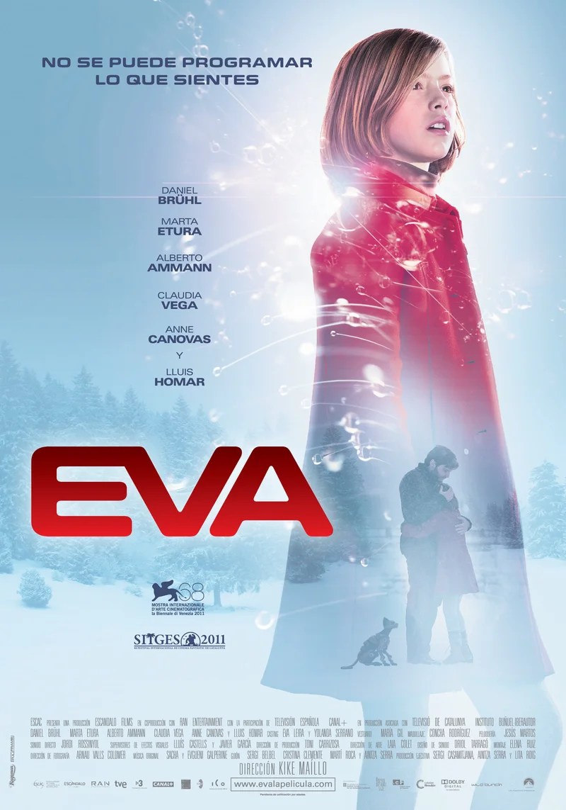

🍿 La cloroteca |
⤶ Volver al inicio |

El problema con la película es lo obvia que se vuelve mientras transcurre. Ambientada en un futuro donde la robótica está muy avanzada, una clase de genio rebelde es encargado en un proyecto que dejó hace 10 años donde tiene que crear a un niño robot. Para esto necesita un modelo, y conoce a Eva, una niña de 10 años, hija de su ex pareja y de su hermano, quienes también trabajaron con él en el mismo proyecto.
Si leiste hasta acá, estoy seguro que puedes adivinar la revelación del final. Se vuelve tan obvia que hasta aburre un poco antes de que suceda. Sumando a eso están los conflictos sociales y amorosos que deberán pasar los adultos. Además, la ambientación de como se crea la mente de un robot es muy fantasiosa, tanto que parece magia en vez de ciencia, nada apegado de la realidad.
Lo más rescatable de la película es la actuación de la niña y sobre todo las escenas finales, tanto que parece mejor que hubieran revelado el secreto a la mitad, porque apenas se revela, la película se torna cada vez más y más interesante.